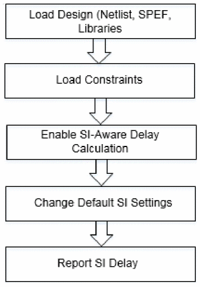

SignaI Integrity Delay Analysis Flow
The SI delay analysis flow is given below:
Figure -12 Tempus SI Delay Analysis Flow

Sample SI Delay Calculation Script
You can use the following script to calculate base and SI delay:
-
Specify the design size:
set_db
–process28 -
Load the design data. Follow the steps given below:
-
Load the timing libraries (.lib) and characterized data (.cdB):
read_libs
typ.lib -cdb typ.cdB -
Schedule reading of a structural, gate-level verilog netlist:
read_netlist
dma_mac.v -
Set the top module name, and check for consistency between Verilog netlist and timing libraries:
init_design
dma_mac -
Load the timing constraints:
read_sdc
constraints.sdc -
Load the cell parasitics:
read_spef
cell.spef.gz
-
Load the timing libraries (.lib) and characterized data (.cdB):
-
Set the individual attacker threshold:
set_db
si_individual_aggressor_threshold0.015 -
Perform 3 SI iterations:
set_db
si_num_iteration3 -
Separate delta delay on data:
set_db
si_delay_separate_on_datatruesi_delay_enable_reporttrue -
Enable SI-aware delay calculation:
set_db
delaycal_enable_sitrue -
Report the timing:
report_timing
-
Report details of SI delay calculation for an arc:
report_delay_calculation
–si –from inst1/A –to inst1/Y -
Report delay uncertainty due to SI:
report_noise
–delay {min | max}
Return to top